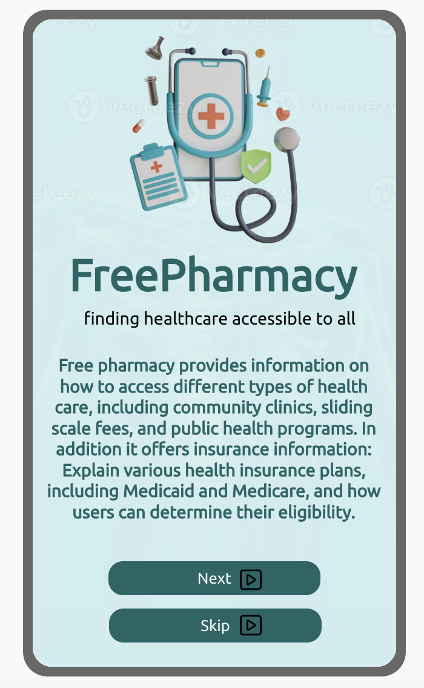
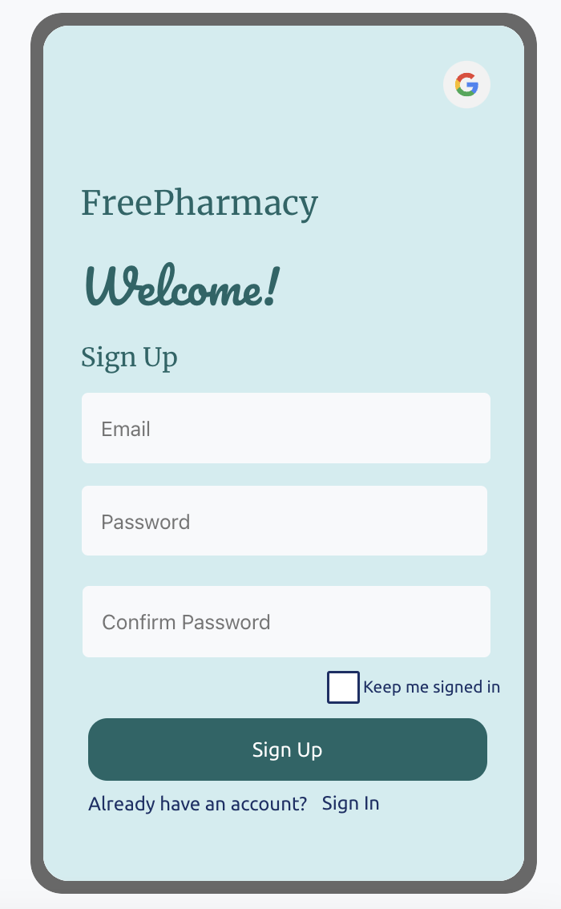
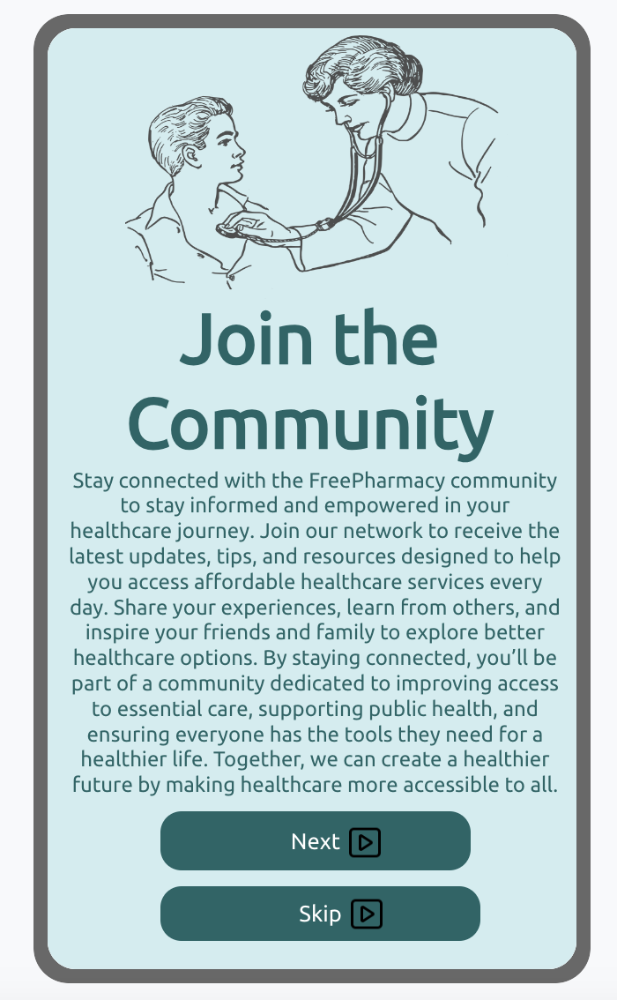

The FreePharmacy mobile app offers easy access to healthcare services, insurance information, and personalized health tips—all at your fingertips. Our user-friendly platform makes it easier to manage your health on-the-go.

Access Health Services Anytime
With FreePharmacy Mobile, you can quickly locate healthcare services, including community clinics and public health programs, wherever you are.
Find Nearby Clinics: Instantly locate affordable care options near you.
Appointment Reminders: Stay on top of important health appointments.
Prescription Management: Manage your medications with ease.
Insurance Made Simple
Learn about health insurance options, including Medicaid, Medicare, and private plans. Explore coverage and find out if you’re eligible.
Compare Plans: Understand and compare different insurance plans.
Eligibility Checker: Discover if you qualify for Medicaid or Medicare.
Insurance FAQs: Get answers to common health coverage questions.


Stay Informed
Get health tips, wellness advice, and information on managing chronic conditions, all within the FreePharmacy app.
Health Articles: Read expert advice on managing your health.
Wellness Tips: Personalized tips for a healthy lifestyle.
Preventive Care: Information on screenings and preventive measures.
Easy Navigation
FreePharmacy Mobile makes navigating healthcare services seamless, from finding doctors to managing appointments and accessing health records.
Provider Search: Find doctors and specialists in your area.
Appointment Scheduler: Easily schedule and manage your appointments.
Health Records: Access your medical history at any time.